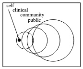

Wary of Wearables
Sunday, April 6, 2014
Though the sweet spot for sensors probably remains outside "personal," there may be use for personal data in the four general spheres of health:

The following are my empirical generalizations from the QSPH summit at UCSD early April.
- Most people are not interested in quantifying themselves.
- Measuring oneself will remain of interest as a novelty, or to those who need the measures, that is, folks training for an event, or faced with a condition that requires monitoring, either doing so themselves or because their doctor asked them.
- Fragmented tech landscape means none of them will reach scale.
- Silo-fication means users are faced with the onerous task of wearing multiple trackers that don't talk to each other and thus provide an incomplete or incoherent view.
- There are signs people and manufacturers may already be tiring of wearables
- The wearables market is just not as big as the smartphone market
- Perhaps the move will be toward software and services that coalesce around smartphone-based apps such as RunKeeper's new Breeze app and Moves app that announced "the launch of Moves 2.0 for the iPhone… (bringing) with it support for Apple’s M7 motion coprocessor in the iPhone 5s for increased tracking accuracy and a new battery saving mode for an increase of up to 40% in battery life."
- Integration into other platforms such as Moves being acquired by Facebook
- Doctors are not interested in continuous data collection. Clinical utility of data is episodic and individualized. (National Research Council. Computational Technology for Effective Health Care: Immediate Steps and Strategic Directions. Washington, DC: The National Academies Press, 2009.)
- Clinicians don't need all the data from everyone all the time. They need specific data from specific people at specific times for specific duration.
- Decouple acquisition of data from delivery of intervention.
Individual-level data could be useful for self– and clinical-care, and aggregate data for community– and public-health. But significant questions and challenges remain along the entire information lifecycle.